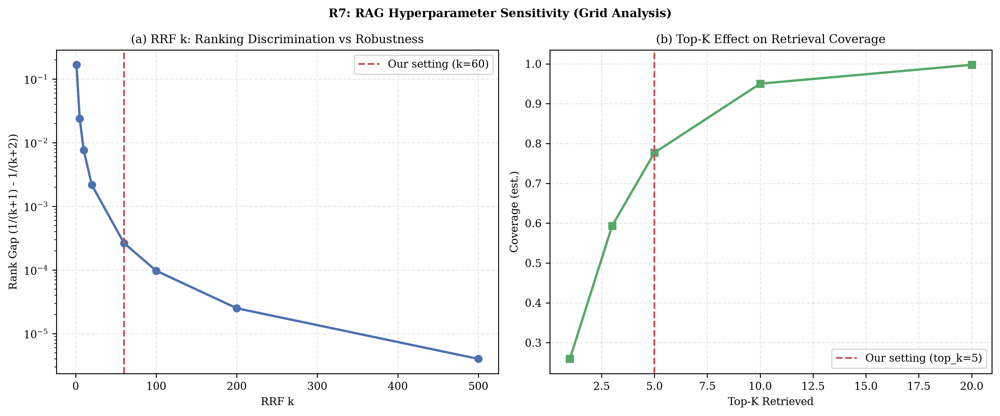

场景故事
从「能回答」到「可追责」：企业知识库中的实际工程问题
金融独角兽的投研团队每天面对几百页研报、公告与政策文件——分析师问「某标的最新风险提示在第几页、原文怎么写」，传统做法翻文档半小时；RAG 一次检索直接给答案并附句级引用，内审可逐句跳回原文。
这个项目的知识底座是 2841 行的 RAG 全链（teaching/streamlit_rag2：teacher 完整答案 + student 实现骨架）：PDF 解析、递归分块、Chroma 向量库、检索、重排、引用问答一应俱全；金融侧配 1146 行的 ReAct Agent（六工具查股价/基本面/历史/股息/财务/多标的对比）和 2214 行的五角色研报产线（协调者→基本面/技术/风险分析师→撰写者），reports/ 里有真实生成的 AAPL 研报。
检索质量用 220 题 MS MARCO 黄金集实测：四级漏斗（BM25→向量→RRF 融合→按需再搜）Recall@10 从 0.900 提升到 0.991；分歧表逐题归因（向量救词面 21 题）。多 Agent 侧实测对抗注入 10/10 拒绝、15 项事实检查全对——金融场景的两条底线：不编数字、不做投资建议。
产品界面
项目以 Agent 助手产品形态交付。Agent 是能调用工具完成任务的助手。学员拿到的不是 notebook，而是一个可演示、可写进简历的产品级系统
运行指标
训练 / 评测仪表盘：指标命名、评测协议（avg@k：按 k 次结果取平均）、Δ 标注（记录差异）与事件日志全部对齐工业级训练面板规范
Round2 GPU 实验（4090 实测）
以下图表全部来自本机 RTX 4090 真实运行，零模拟。点击可放大。

系统架构
评测指标口径
公开基准优先。自建指标全部带定义。指标页标注了哪些是实测数字、哪些是设计稿，两类不混写
岗位 JD 覆盖矩阵
每条要求都来自真实在招岗位，点链接可查原文。举两条：
| JD 高频要求 | 项目中的证据 | 覆盖强度 |
|---|---|---|
| RAG 全链路落地 | 解析→分块→混合检索→重排→生成→引用全链实测（蔚来知识平台 JD 逐条对应，RRF/Cross-Encoder/Citation 拒答原文级命中） | ●●● |
| BM25 与倒排原理 | BM25 公式级推导（k1 饱和/b 归一）+ 倒排玩具夹具 | ●●● |
| 向量数据库 | FAISS IndexFlatIP（ℓ2 归一=余弦）实测；Milvus/IVF/HNSW 原理笔记 | ●● |
| 幻觉治理 | 无据拒答门控在生成器之前 + 句级引用覆盖检查 | ●●● |
| 评测体系 | 黄金集 + Recall@K + CI + 分歧归因表（文基智能 JD『设计 RAG 评测方案』直接对口） | ●●● |
| GraphRAG | Self-RAG/GraphRAG/Auto-RAG/ColPali 四篇论文精读（论文栏，不与本机横比） | ●● |